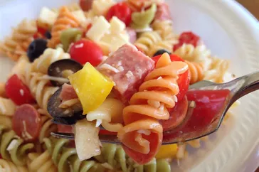

Salada de macarrão

Descrição
Esta salada de macarrão com pepperoni, tomate e queijo provolone é a melhor que já comi, e as pessoas a pedem com frequência. É um acompanhamento muito fácil e leve para um piquenique ou jantar.
Ingredientes
- Um pacote de macarrão
- 3 xícaras de tomates cereja, cortados ao meio
- ½ libra de queijo provolone em cubos
- ½ libra de salame em cubos
- ¼ libra de pepperoni fatiado, cortado ao meio
- 1 pimentão verde grande , cortado em pedaços de 2,5 cm
- 1 lata (10 onças) de azeitonas pretas, escorridas
- 1 frasco (4 onças) de pimentão, escorrido
- 1 garrafa (8 onças) de molho para salada italiano
Etapas para o pareparo do macarrão
- Reúna todos os ingredientes.
- Ferva uma panela grande com água levemente salgada. Cozinhe o macarrão fusilli na água fervente, mexendo de vez em quando, até ficar macio, mas firme ao dente, por cerca de 12 minutos. Escorra.
- Misture o macarrão com os tomates, o queijo, o salame, o pepperoni, o pimentão verde, as azeitonas e os pimentões em uma tigela grande. Regue com o molho para salada e misture bem.
- Aproveitar!
Home